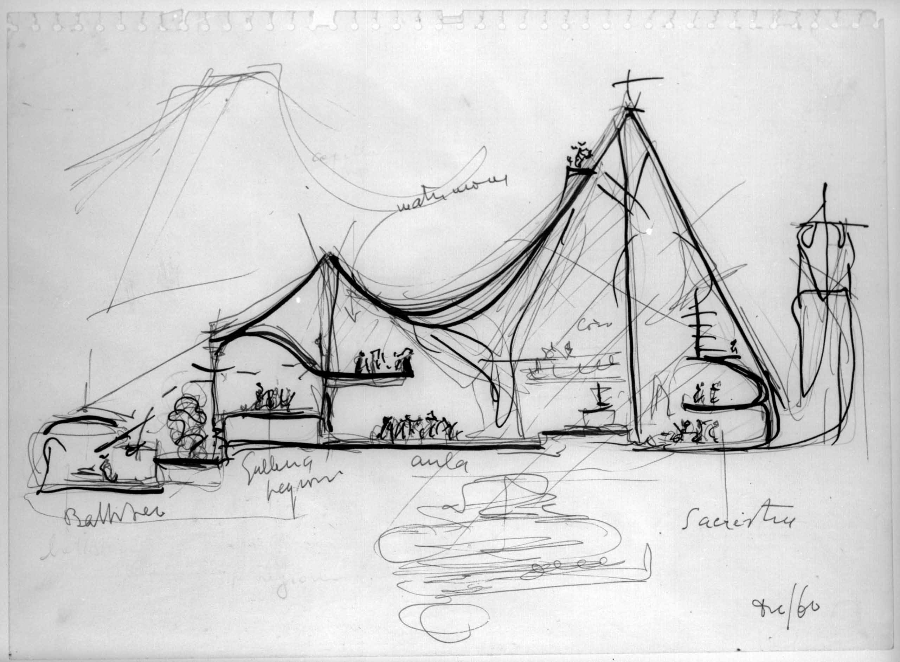
La sezione svela la struttura verticale dello spazio. Verifica altezze, direzioni della luce, rapporti con il suolo, ritmo delle soglie. Più che disegnare, la sezione interroga: chiede alla forma se può farsi volume, attraversamento, profondità percepita. Rende visibile ciò che nella pianta è ancora implicito.
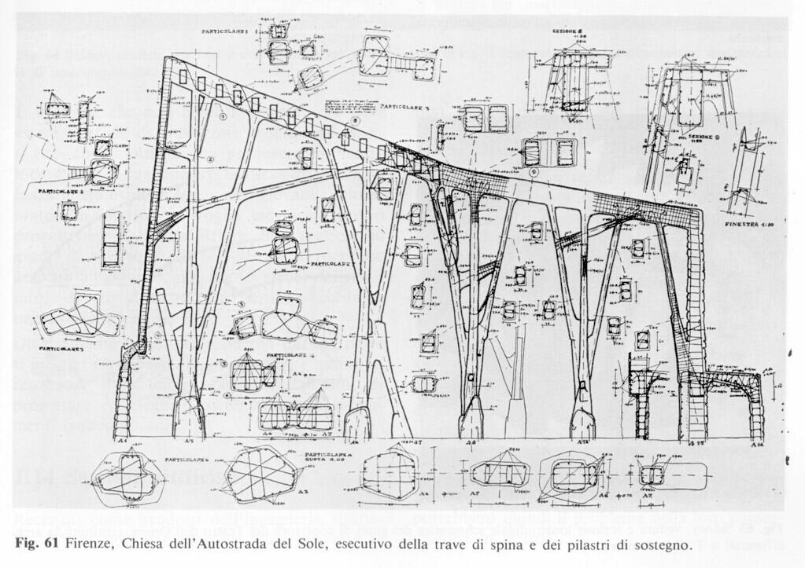
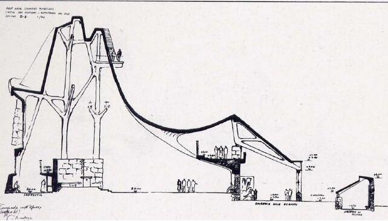
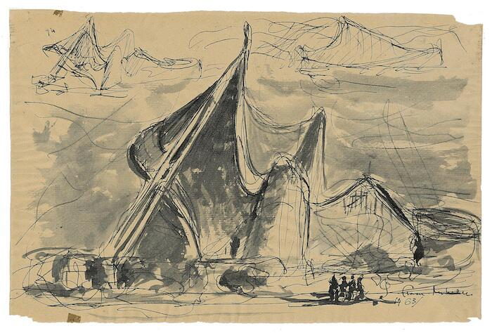
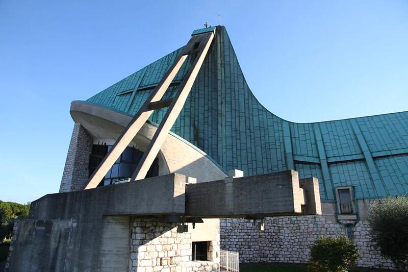
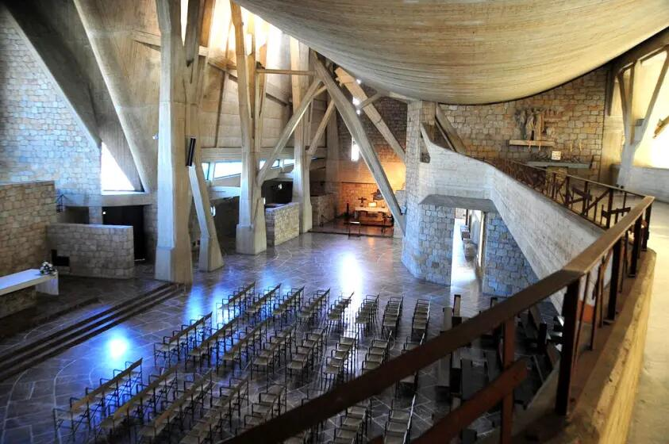
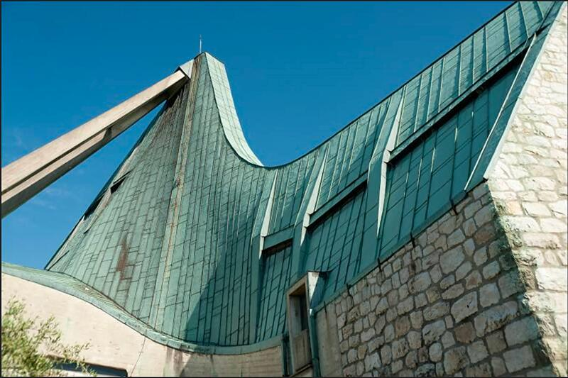
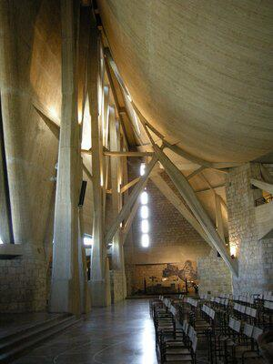
La Chiesa dell’Autostrada del Sole è uno dei casi più chiari in cui la sezione diventa il luogo in cui il progetto rivela la propria logica interna. Mentre la pianta registra la disposizione dei volumi, è la sezione che mostra il comportamento dello spazio: la dinamica delle coperture, la modulazione della luce, la variazione delle altezze e delle tensioni strutturali.
Nella grande sezione longitudinale, il tetto a falde spezzate emerge come una struttura viva, irregolare, quasi tesa, che guida la luce naturale e definisce un percorso percettivo più che geometrico. Le curvature, gli innalzamenti improvvisi e le compressioni creano un ritmo spaziale che non è decorativo, ma risponde a un’esigenza liturgica e comunitaria: costruire un luogo di raccoglimento in movimento.
La sezione mette inoltre in evidenza la relazione tra murature portanti e copertura sospesa, rivelando l’equilibrio instabile e intenzionale tra masse e vuoti. È in questa “messa a nudo” che la forma dimostra la sua coerenza: la luce entra come taglio verticale, come fenditura laterale, come riflesso sulle superfici inclinate, verificando di volta in volta la qualità atmosferica dell’edificio.
Per Michelucci, la sezione non è un disegno tecnico ma una prova critica: è lo spazio nella sua profondità, nella sua luminosità e nella sua tensione strutturale. La Chiesa dell’Autostrada insegna così che progettare significa vedere lo spazio di lato, comprenderne il peso, la luce, la gravità, e lasciar emergere da questa verifica il senso dell’architettura.
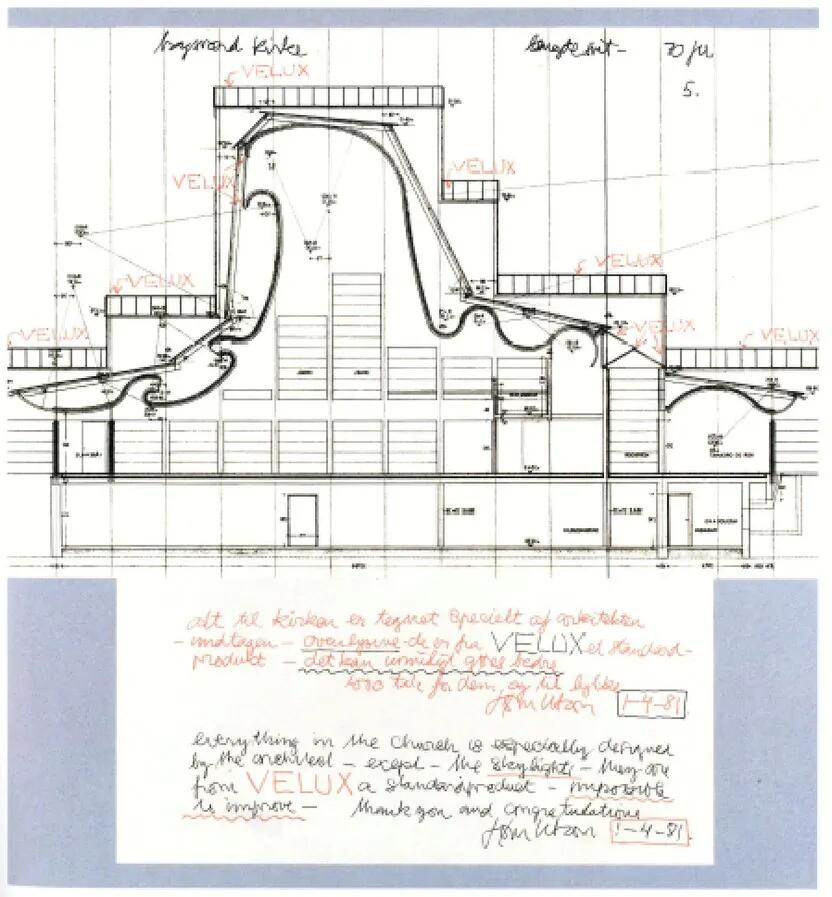
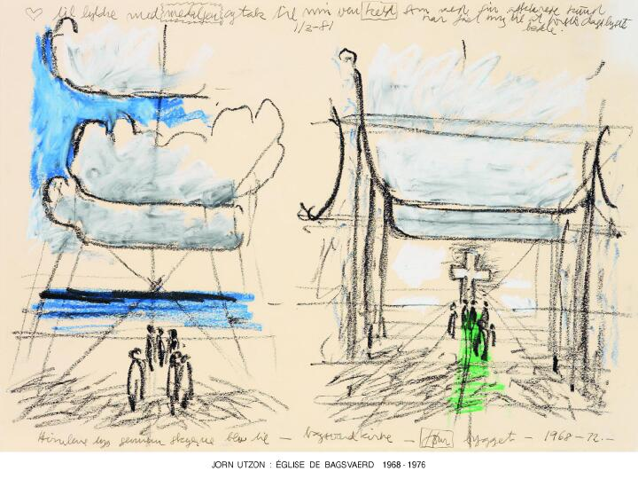
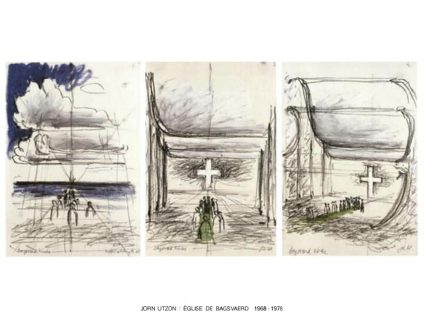
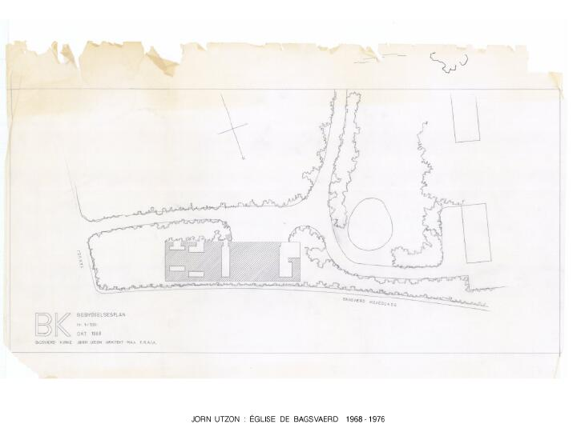
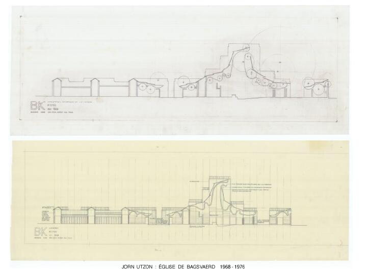
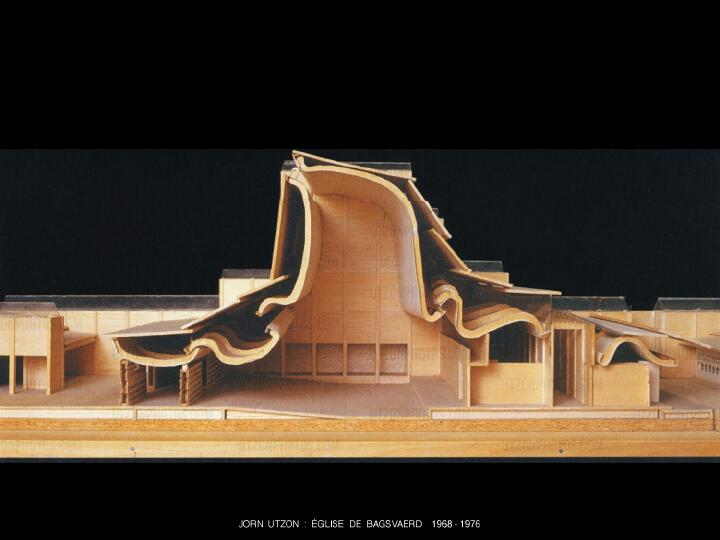
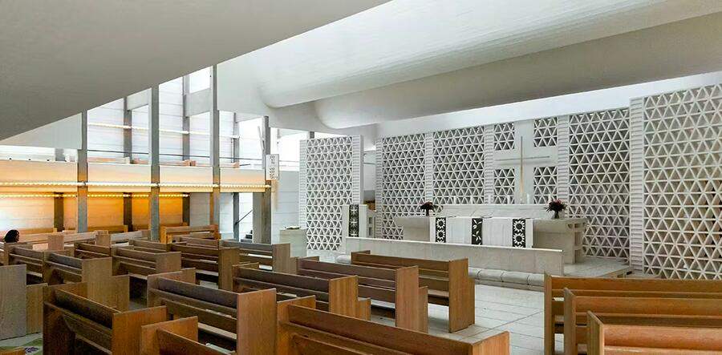
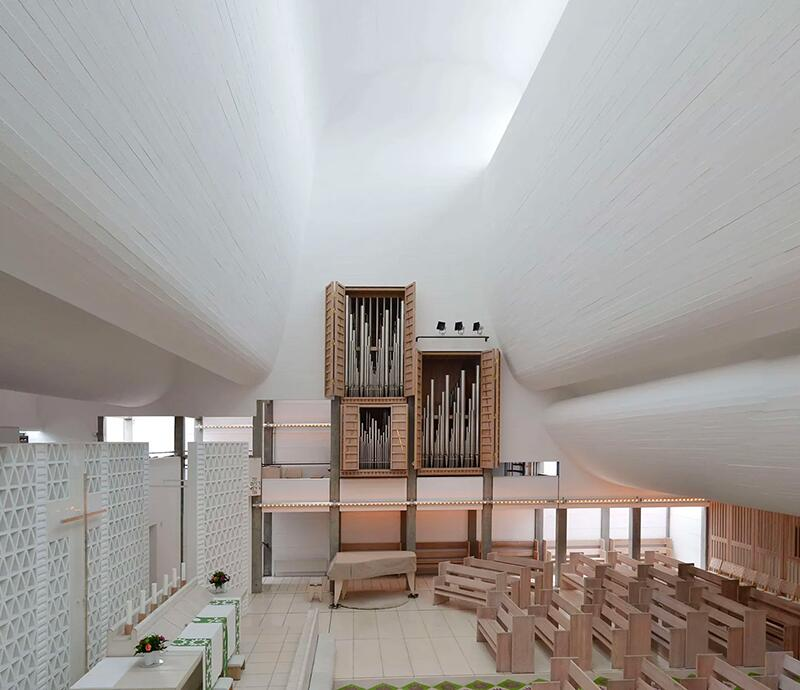
La Bagsværd Church rappresenta uno dei casi più esemplari in cui la sezione diventa il vero luogo di progetto. Utzon non costruisce la chiesa a partire dalla pianta o da una forma esterna riconoscibile, ma dalla curva della volta interna: una superficie morbida, simile a una nuvola, che nasce dall’osservazione di un cielo tropicale durante un viaggio in Asia. È questa curva — non l’involucro, né la composizione dei volumi — che definisce l’identità dell’edificio.
Nella sezione si vede con evidenza ciò che nella pianta rimane implicito: lo spazio liturgico è un ambiente atmosferico regolato da luce e gravità. Le superfici concave della volta convogliano la luce zenitale lungo traiettorie morbide, generando gradienti luminosi che sostituiscono qualsiasi apparato iconografico. La sezione rivela come la luce modelli lo spazio, costruendo profondità, ordine e orientamento senza imporre assi o simmetrie.
La “nuvola” non è un gesto poetico astratto, ma il risultato di una verifica rigorosa: la curvatura è studiata per sostenersi con un sottile guscio in calcestruzzo, per distribuire il carico e per amplificare l’acustica in modo controllato. La sezione mostra così l’inseparabilità tra fenomeno e struttura, tra geometria e comportamento: la forma delle superfici determina lo spazio molto più di quanto facciano le pareti perimetrali, che restano quasi mute.
Per questo la Bagsværd Church è centrale nella logica della Lezione 5: la forma emerge dalla sezione perché è lì che la luce e la materia si incontrano, e che lo spazio rivela le sue ragioni profonde. Utzon dimostra che la sezione non è un disegno tecnico, ma uno strumento critico che permette al progetto di trovare il proprio carattere, il proprio ritmo e la propria atmosfera.
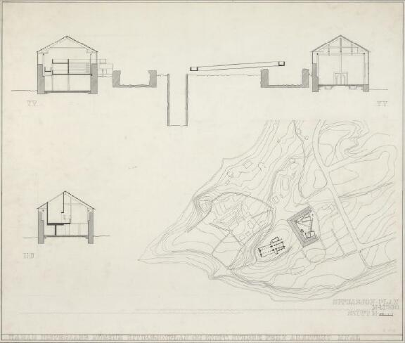
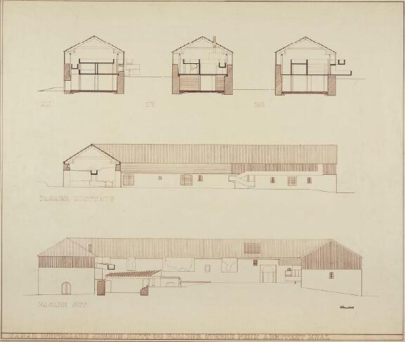
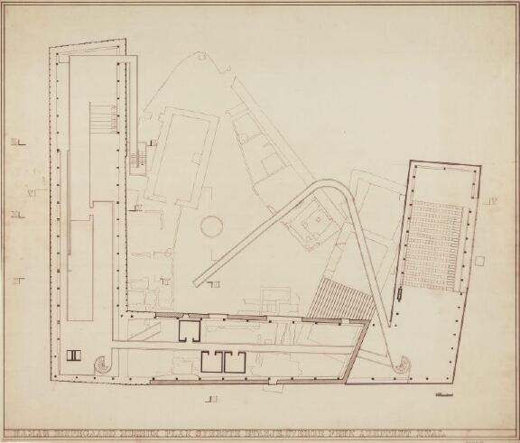
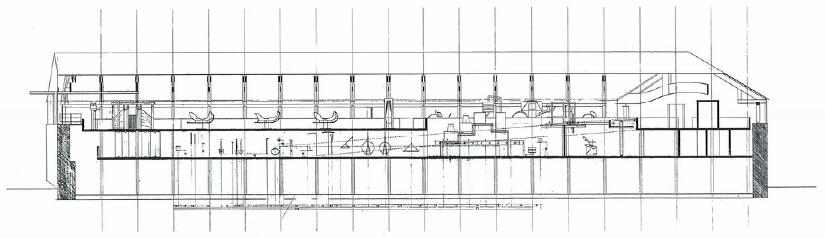
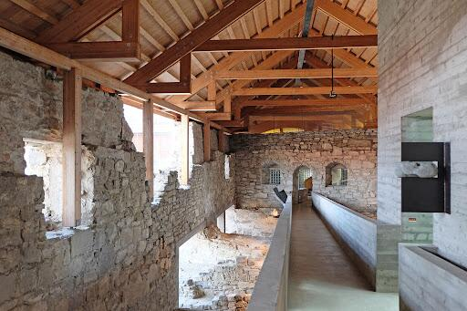
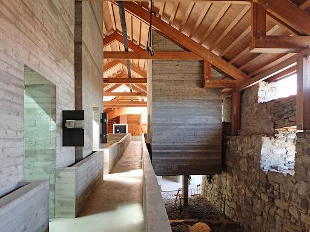
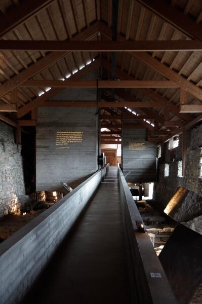
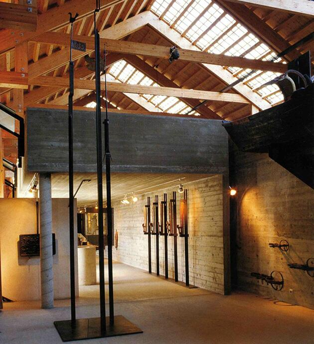
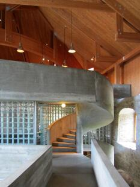
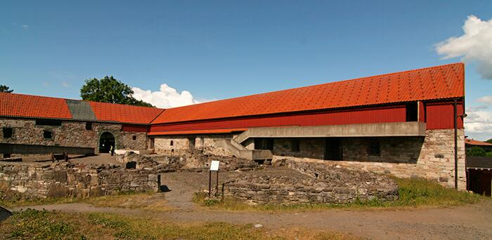
Nel progetto per il Hedmark Museum, la sezione non serve a descrivere la forma, ma a definire la postura dell’architettura nei confronti della storia. Il ponte interno — vero dispositivo concettuale dell’intero intervento — è comprensibile solo in sezione, perché è lì che si misura lo scarto fra la leggerezza della nuova struttura e la gravità delle rovine medievali che essa attraversa senza mai toccarle.
Fehn costruisce la sezione come un luogo di negoziazione: da un lato il peso del passato, la muratura irregolare, la materia stratificata dell’archeologia; dall’altro la linea tesa del ponte, una trave sottile che si distacca millimetricamente dalle superfici antiche. La sezione rende visibile questa distanza — fisica e mentale — e dimostra che il progetto non è un ampliamento, ma un modo di guardare. L’architettura diventa un dispositivo percettivo che organizza il rapporto tra corpo e rovina, tra movimento e memoria.
Il ponte non connette solo due punti nello spazio: connette due epoche, due modi di costruire, due logiche strutturali. In sezione emergono la discontinuità, la sospensione, la scelta precisa di non appoggiarsi alla storia ma di attraversarla con rispetto. Non c’è fusione, non c’è mimetismo: c’è un dialogo fondato sulla distanza, che è il vero atto critico di Fehn.
Per questo il Hedmark Museum è esemplare nella lettura didattica della sezione: qui la sezione è il luogo dove si chiarisce il comportamento dello spazio, dove la luce rivela il vuoto tra le parti, dove il progetto dimostra la propria etica prima ancora che la propria forma. Non è un disegno che rappresenta l’edificio: è il disegno che ne fonda il senso.